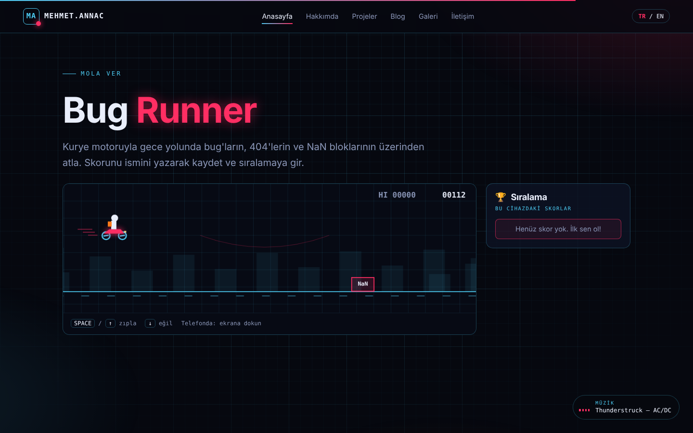
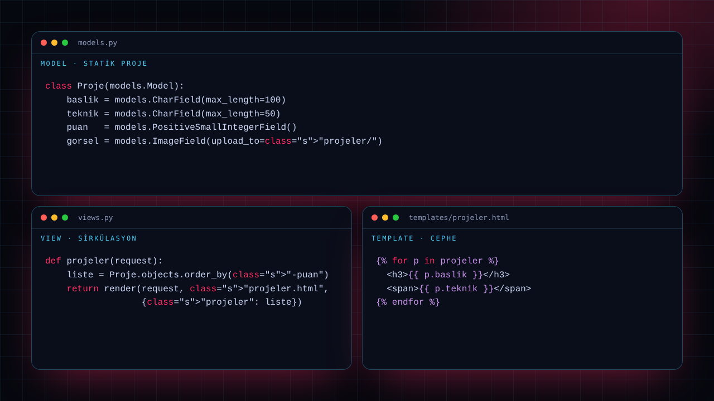

03 — Yazılar03 — Writing
BlogBlog
Yazılım, tasarım ve bu yolda öğrendiklerim üzerine notlar.Notes on software, design and what I'm learning along the way.

Yapay zekâ ile web sitesi yapmak: bu siteyi nasıl kurdum?Building a website with AI: how I made this site
Bu siteyi bir yapay zekâ asistanıyla adım adım nasıl planladığımı, tasarladığımı ve yayına aldığımı anlatıyorum.
How I planned, designed and published this site step by step with an AI assistant.

Mimari restorasyondan yazılıma: neden geçtim?From architectural restoration to software: why I switched
Mimar Sinan'da mimari restorasyon okurken neden yatay geçişle Bilgisayar Programcılığı'na geçtiğimi yazdım.
Why I transferred from architectural restoration at Mimar Sinan to Computer Programming.

Yeni başlayanlar için HTML/CSS: ilk adımlarHTML/CSS for beginners: first steps
Bir web sayfasının iskeleti, stili ve mobil uyumu: ilk haftalarda öğrendiğim temel kavramlar.
Structure, style and responsiveness of a web page: the basics I learned in my first weeks.

Siteme oyun ekledim: Canvas ile Bug RunnerI added a game to my site: Bug Runner with Canvas
Chrome'un dinozor oyunundan esinlenen, kurye motorlu bir koşu oyununu HTML Canvas ile nasıl yaptığımı anlatıyorum.
How I built a courier-bike runner game inspired by Chrome's dinosaur game, using HTML Canvas.

Python'a merhaba: neden ilk dilim olarak seviyorum?Hello Python: why I love it as my first language
Okunabilir sözdizimi, güçlü kütüphaneler ve Django'ya açılan kapı: Python'u neden sevdiğimi küçük örneklerle anlatıyorum.
Readable syntax, powerful libraries and a door to Django: why I love Python, with small examples.

Django'yu bir mimar gibi düşünmek: MVT yapısıThinking about Django like an architect: the MVT pattern
Model, View ve Template katmanlarını restorasyon eğitimimden aldığım bir bina benzetmesiyle anlatıyorum.
Explaining Model, View and Template with a building analogy from my restoration training.